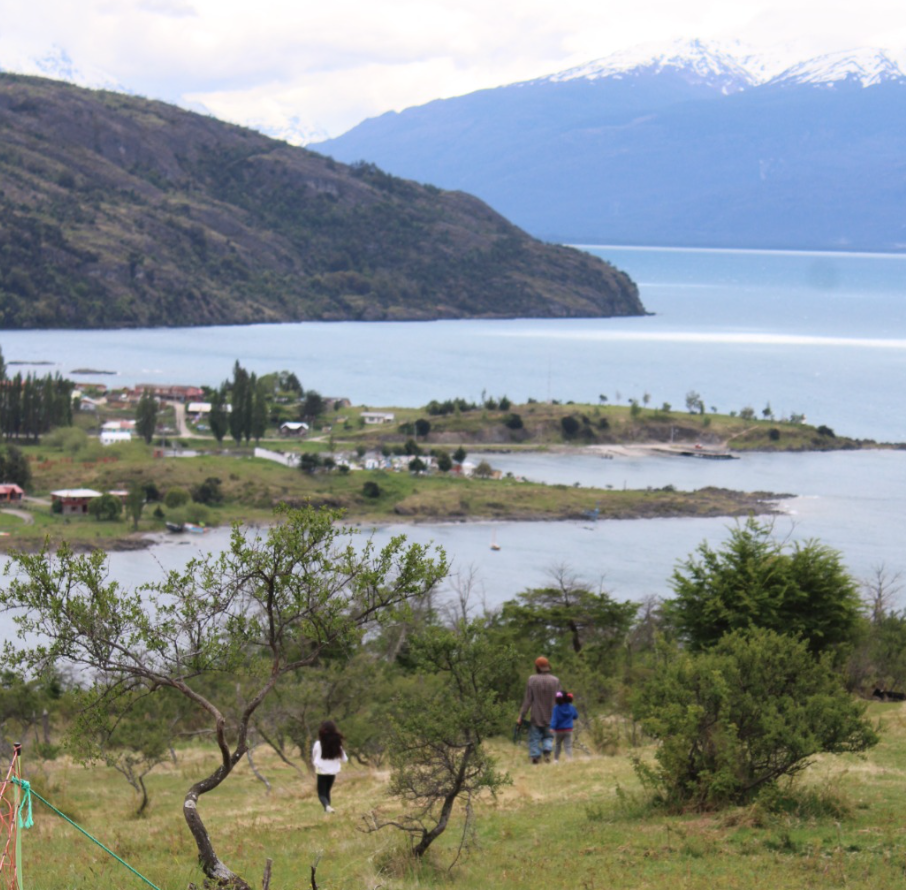

← All programs
Environmental Workshop with Escuela Libre Alma Verde
More nature in public education.

With Escuela Libre Alma Verde, we bring environmental workshops to the public schools of the basin, so students learn in direct contact with the natural world around them.
Get in touch
We'd love to hear from you, whether you want to help or simply find out more about our work.